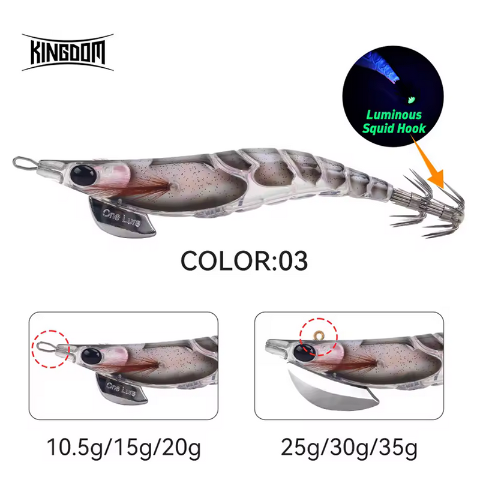

Egis Low Cost
KINGDOM REINO – Análisis completo (Color 03)

👻 Egi efecto fantasma, ultra discreto y extremadamente natural.
🎨 Características
Diseño:
Cuerpo tipo gamba con acabado translúcido gris y moteado interno.
Color base:
Gris transparente con tonos suaves rosados en la cabeza.
Efecto visual:
Perfil “fantasma”, apenas genera silueta agresiva.
Ojos:
Oscuros y discretos, integrados en el cuerpo.
Coronas:
Ligeramente luminiscentes, solo visibles a corta distancia.
Pesos disponibles:
10.5g / 15g / 20g y 25g / 30g / 35g.
🌤️ Condiciones ideales de uso
☀️
Día claro y estable:
Condición óptima.
🌊
Aguas muy claras:
Máxima eficacia.
🐙
Calamares presionados:
Muy recomendado.
🌅
Amanecer / Atardecer:
Funciona bien sin sobresaturar.
🌙
Noche:
No recomendado salvo con mucha luz artificial.
🧠 Comportamiento esperado
👉 Presentación extremadamente natural.
👉 Ideal para pesca lenta y pausada.
👉 Perfecto como “último recurso” cuando nada funciona.
👉 Reduce rechazos en zonas muy pescadas.
⚙️ Resumen práctico
Condición
Eficiencia
🌊 Agua muy clara
🔥 Excelente
☀️ Día soleado
🟢🟢 Muy alta
🐙 Calamar receloso
🔥 Excelente
🌅 Luz baja
🟡 Media
🌙 Noche cerrada
🔴 Baja
🛒 Comprar KINGDOM REINO